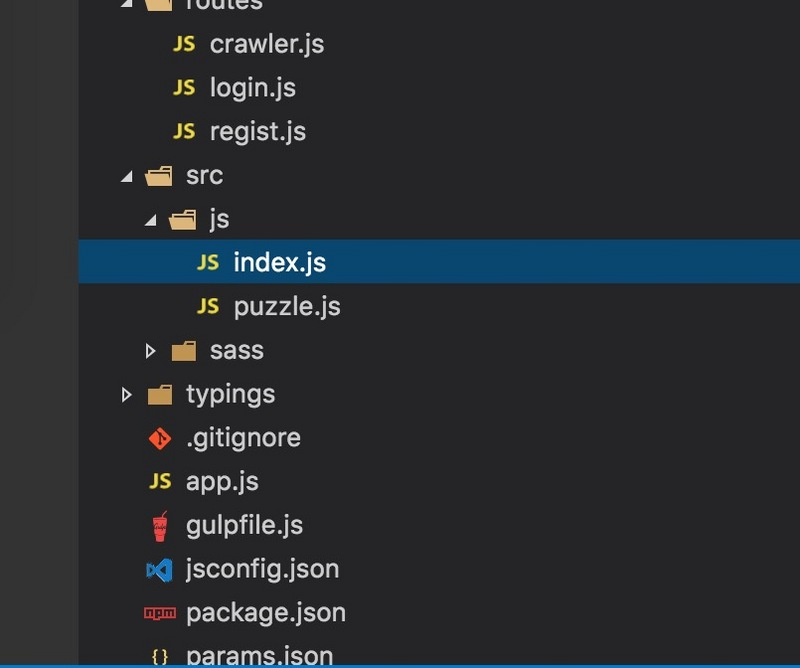
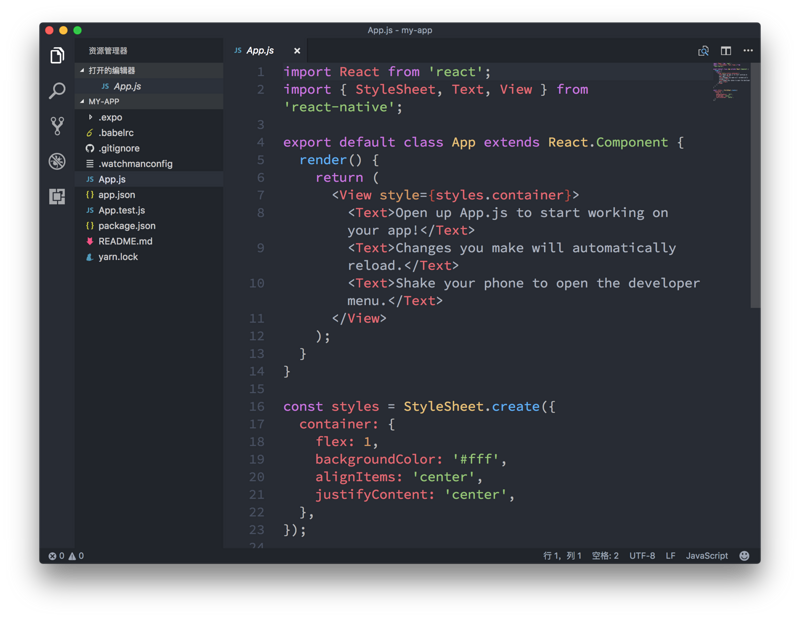

前端开发工具
Visual Studio Code简介
Visual Studio Code（以下简称vscode）是一个轻量且强大的代码编辑器，支持Windows，OS X和Linux。内置JavaScript、TypeScript和Node.js支持，而且拥有丰富的插件生态系统，可通过安装插件来支持C++、C#、Python、PHP等其他语言。
推荐插件
- Auto Close Tag（修改 html 标签，自动帮你完成尾部闭合标签的同步修改）
- vscode-icon （让 vscode 资源树目录加上图标，必备良品！） 
- Debugger for Chrome （）
- Path Intellisense （自动路劲补全，默认不带这个功能的）
ESlint （ESlint 接管原生 js 提示，可以自定制提示规则）
- 首先安装vscode的插件 ESLint
在vscode设置里添加
"eslint.validate": [ "javascript", "javascriptreact", "html", { "language": "html", "autoFix": true }, { "language": "vue", "autoFix": true } ], "eslint.autoFixOnSave": true在项目根目录下创建
.eslintrc.js文件，内容如下：module.exports = { root: true, parser: 'babel-eslint', parserOptions: { sourceType: 'module' }, env: { browser: true, node: true, es6: true }, extends: 'eslint:recommended', // required to lint *.vue files plugins: ['html'], // check if imports actually resolve settings: { 'import/resolver': { webpack: { config: 'build/webpack.base.conf.js' } } }, // add your custom rules here //it is base on https://github.com/vuejs/eslint-config-vue rules: { 'accessor-pairs': 2, 'arrow-spacing': [ 2, { before: true, after: true } ], 'block-spacing': [2, 'always'], 'brace-style': [ 2, '1tbs', { allowSingleLine: true } ], camelcase: [ 0, { properties: 'always' } ], 'comma-dangle': [2, 'never'], 'comma-spacing': [ 2, { before: false, after: true } ], 'comma-style': [2, 'last'], 'constructor-super': 2, curly: [2, 'multi-line'], 'dot-location': [2, 'property'], 'eol-last': 2, eqeqeq: [2, 'allow-null'], 'generator-star-spacing': [ 2, { before: true, after: true } ], 'handle-callback-err': [2, '^(err|error)$'], indent: [ 2, 2, { SwitchCase: 1 } ], 'jsx-quotes': [2, 'prefer-single'], 'key-spacing': [ 2, { beforeColon: false, afterColon: true } ], 'keyword-spacing': [ 2, { before: true, after: true } ], 'new-cap': [ 2, { newIsCap: true, capIsNew: false } ], 'new-parens': 2, 'no-array-constructor': 2, 'no-caller': 2, 'no-console': 'off', 'no-class-assign': 2, 'no-cond-assign': 2, 'no-const-assign': 2, 'no-control-regex': 0, 'no-delete-var': 2, 'no-dupe-args': 2, 'no-dupe-class-members': 2, 'no-dupe-keys': 2, 'no-duplicate-case': 2, 'no-empty-character-class': 2, 'no-empty-pattern': 2, 'no-eval': 2, 'no-ex-assign': 2, 'no-extend-native': 2, 'no-extra-bind': 2, 'no-extra-boolean-cast': 2, 'no-extra-parens': [2, 'functions'], 'no-fallthrough': 2, 'no-floating-decimal': 2, 'no-func-assign': 2, 'no-implied-eval': 2, 'no-inner-declarations': [2, 'functions'], 'no-invalid-regexp': 2, 'no-irregular-whitespace': 2, 'no-iterator': 2, 'no-label-var': 2, 'no-labels': [ 2, { allowLoop: false, allowSwitch: false } ], 'no-lone-blocks': 2, 'no-mixed-spaces-and-tabs': 2, 'no-multi-spaces': 2, 'no-multi-str': 2, 'no-multiple-empty-lines': [ 2, { max: 1 } ], 'no-native-reassign': 2, 'no-negated-in-lhs': 2, 'no-new-object': 2, 'no-new-require': 2, 'no-new-symbol': 2, 'no-new-wrappers': 2, 'no-obj-calls': 2, 'no-octal': 2, 'no-octal-escape': 2, 'no-path-concat': 2, 'no-proto': 2, 'no-redeclare': 2, 'no-regex-spaces': 2, 'no-return-assign': [2, 'except-parens'], 'no-self-assign': 2, 'no-self-compare': 2, 'no-sequences': 2, 'no-shadow-restricted-names': 2, 'no-spaced-func': 2, 'no-sparse-arrays': 2, 'no-this-before-super': 2, 'no-throw-literal': 2, 'no-trailing-spaces': 2, 'no-undef': 2, 'no-undef-init': 2, 'no-unexpected-multiline': 2, 'no-unmodified-loop-condition': 2, 'no-unneeded-ternary': [ 2, { defaultAssignment: false } ], 'no-unreachable': 2, 'no-unsafe-finally': 2, 'no-unused-vars': [ 2, { vars: 'all', args: 'none' } ], 'no-useless-call': 2, 'no-useless-computed-key': 2, 'no-useless-constructor': 2, 'no-useless-escape': 0, 'no-whitespace-before-property': 2, 'no-with': 2, 'one-var': [ 2, { initialized: 'never' } ], 'operator-linebreak': [ 2, 'after', { overrides: { '?': 'before', ':': 'before' } } ], 'padded-blocks': [2, 'never'], quotes: [ 2, 'single', { avoidEscape: true, allowTemplateLiterals: true } ], semi: [2, 'never'], 'semi-spacing': [ 2, { before: false, after: true } ], 'space-before-blocks': [2, 'always'], 'space-before-function-paren': [2, 'never'], 'space-in-parens': [2, 'never'], 'space-infix-ops': 2, 'space-unary-ops': [ 2, { words: true, nonwords: false } ], 'spaced-comment': [ 2, 'always', { markers: ['global', 'globals', 'eslint', 'eslint-disable', '*package', '!', ','] } ], 'template-curly-spacing': [2, 'never'], 'use-isnan': 2, 'valid-typeof': 2, 'wrap-iife': [2, 'any'], 'yield-star-spacing': [2, 'both'], yoda: [2, 'never'], 'prefer-const': 2, 'no-debugger': process.env.NODE_ENV === 'production' ? 2 : 0, 'object-curly-spacing': [ 2, 'always', { objectsInObjects: false } ], 'array-bracket-spacing': [2, 'never'] } }
Prettier （前端的代码格式化工具）
- 首先安装vscode的插件 Prettier 和 vetur
- 在vscode设置里添加
"vetur.format.defaultFormatter.html":"js-beautify-html"
Vetur （Vue工具）
主题
- One Dark Pro (漂亮！)
